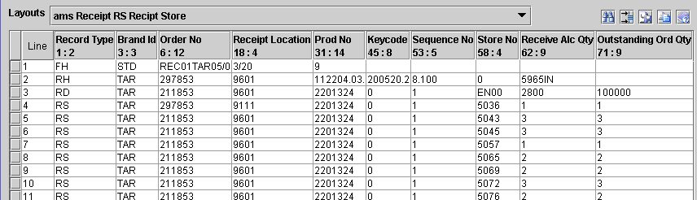
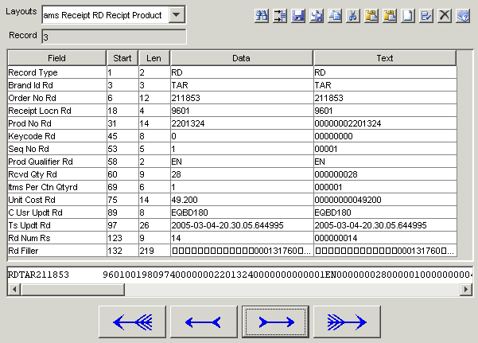

JRecord
JRecord
Editor |
|||||||||||
|
Editor |
|||||||||||
The editor lets you display and edit Files using the RecordLayout;
Table View - display the file as a table

Record View - display one line or record at a time:

| JRecord at SourceForge | Download Page | Forums |